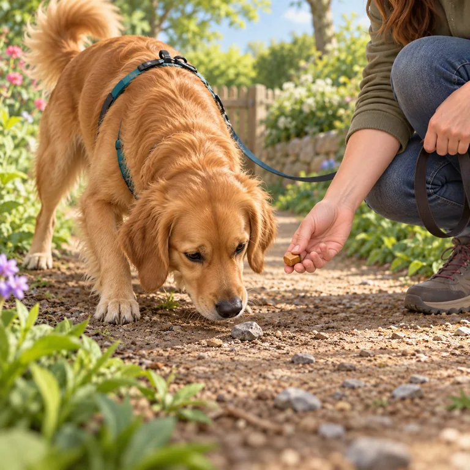
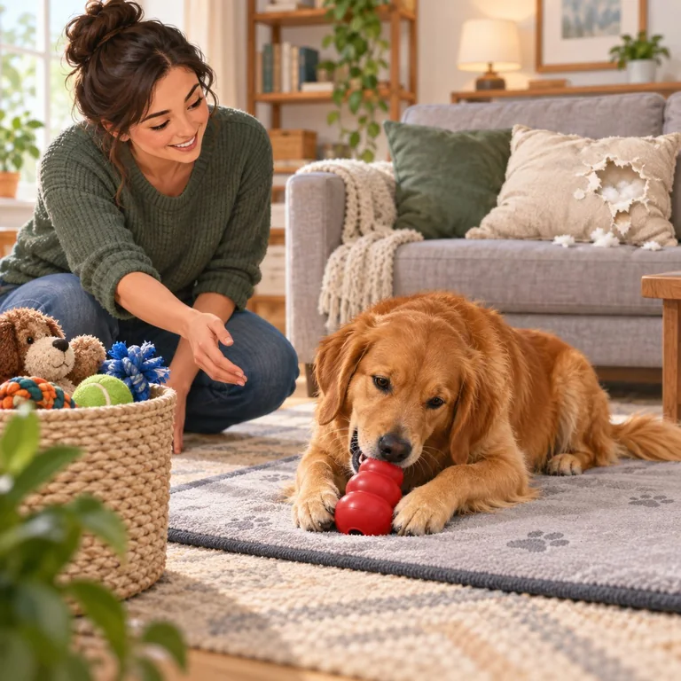
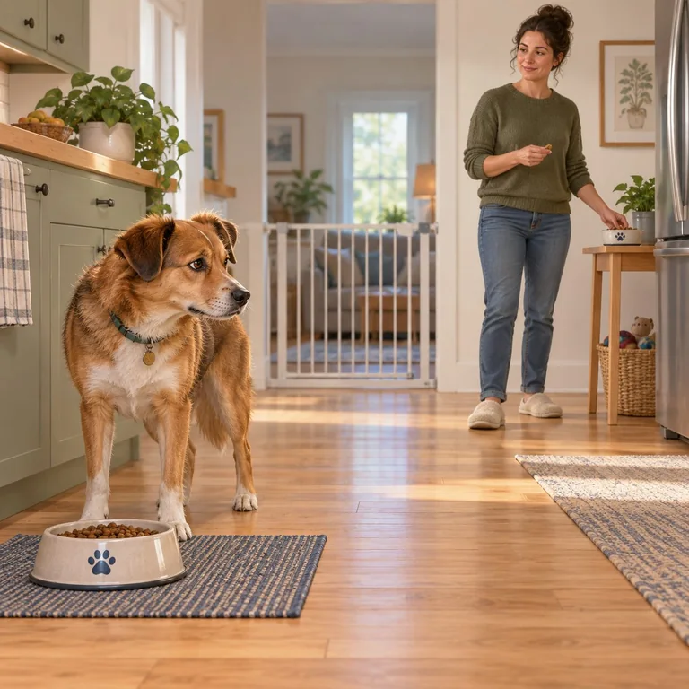
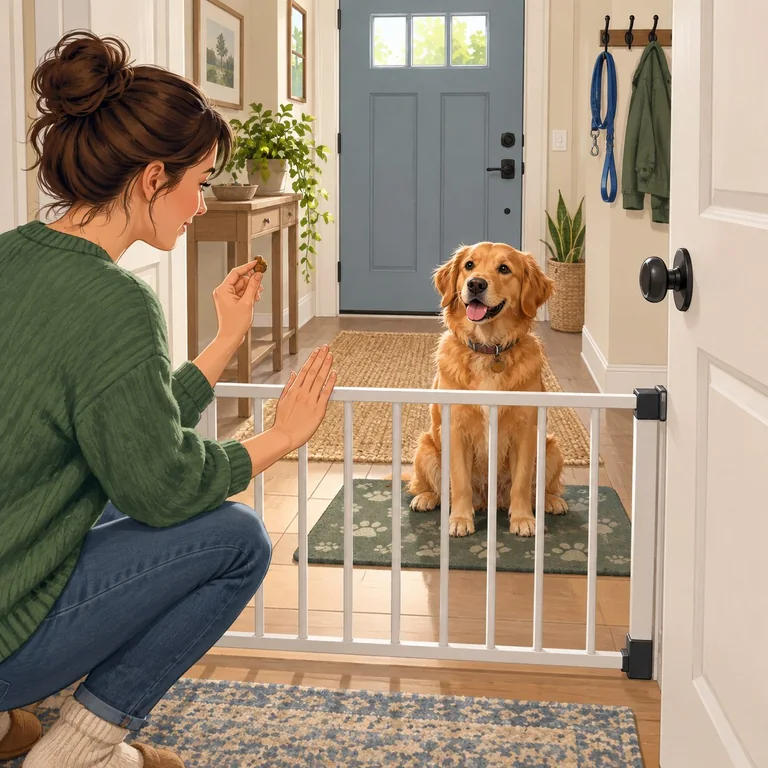

People safety
Biting & nipping
A safety-first response for puppy mouthing, snapping, or bites that need more support.
Open guide
Possible ingestion
Eating stones & dirt
What to do if something may have been swallowed, and how to lower scavenging risk.
Open guide
Safer outlets
Destructive chewing
Make the room easier, meet chewing needs safely, and notice when distress may be involved.
Open guide
Give space
Guarding food or toys
Recognize early guarding signals and keep people and dogs safely apart from valued items.
Open guideLower intensity
Barking & lunging
Find more space first, then make walks easier before practicing around triggers.
Open guideTraffic safety
Chasing animals or cars
Prevent a dangerous chase and practice attention only in controlled, safer places.
Open guideDistress is real
Separation distress
Use observation and tiny, manageable absences instead of waiting out panic.
Open guide
Escape prevention
Door dashing
Secure the exit every time, then practice a calm doorway routine behind a barrier.
Open guide